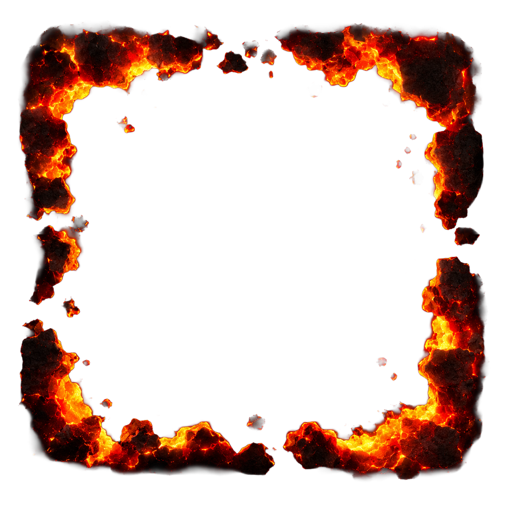
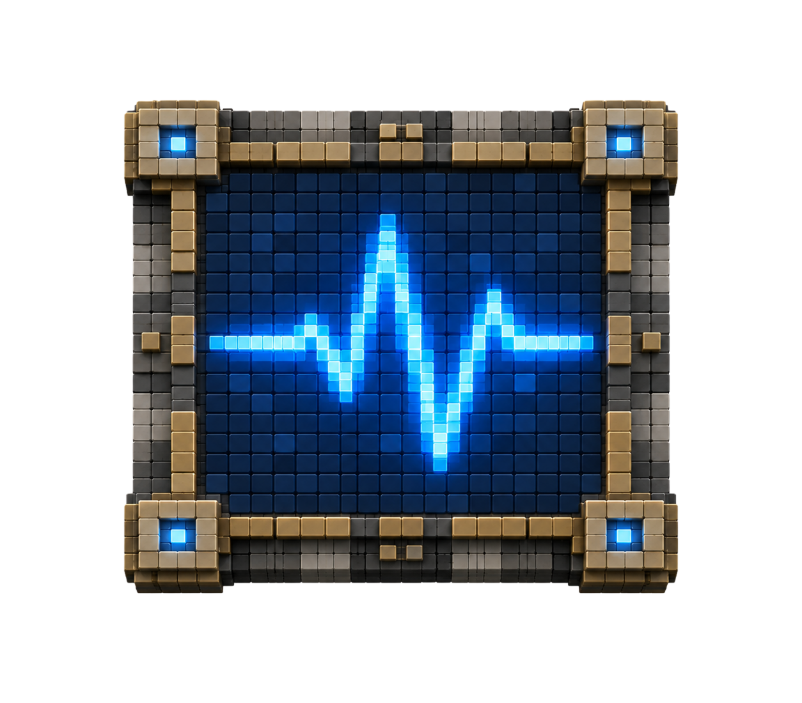
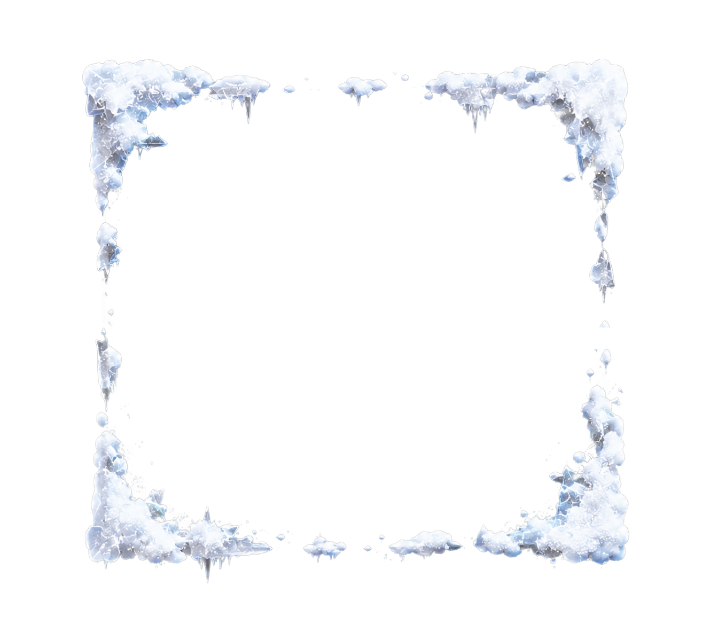
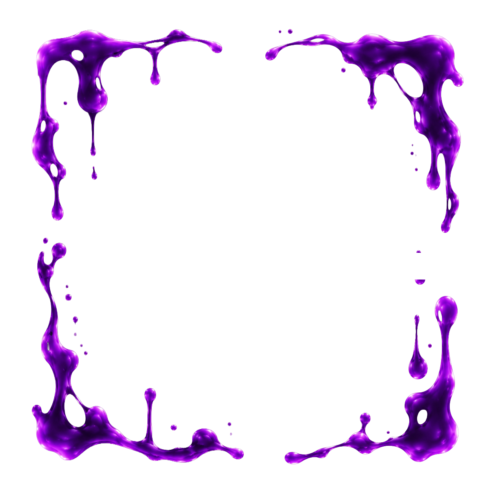
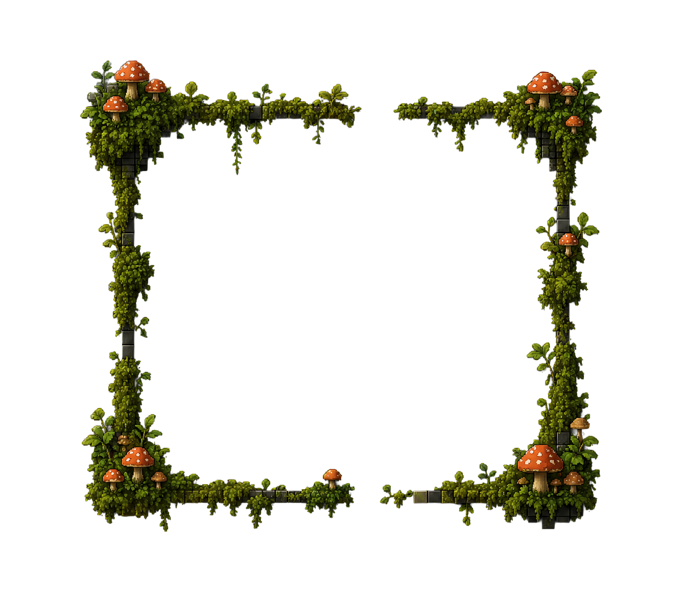

Hazard Tile UI 적용 방식 비교
새 `*_tile_hazard.png` 이미지는 중앙이 비고 가장자리가 강한 프레임형 아트입니다.
그래서 "기존 타일을 보존할지", "위험 상태에서만 전면으로 밀어올릴지"가 핵심 결정입니다.
추천: A
기존 약점 타일은 유지하고, hazard 이미지는 경고/활성 오버레이로 쓰는 방향이 가장 읽기 쉽습니다.
Option A
오버레이 프레임
기존 약점 타일을 그대로 유지하고, hazard 이미지를 위에 얹어 방해요소 상태만 강조합니다.
Red


Blue


Purple


Green


- 타일 약점 색을 계속 읽을 수 있습니다.
- 현재 `CellView.gd`의 obstacle overlay 구조와 가장 잘 맞습니다.
- warning, active, afterglow를 알파/펄스로 나누기 쉽습니다.
Option B
타일 교체형
위험 상태가 되면 기존 타일 대신 hazard 이미지를 메인 타일처럼 사용합니다.
- 위험감은 강하지만 중앙이 비어 보여 기본 타일 정보가 사라집니다.
- 배경이 드러나면 "빈 슬롯"처럼 읽힐 위험이 있습니다.
- 전투 판독성보다 장식성이 앞설 수 있습니다.
Option C
경고/활성 하이브리드
경고 때는 얕은 프레임, 활성 때는 강한 프레임으로 단계 차이를 더 크게 만드는 방식입니다.
- A의 장점을 유지하면서 상태 차이를 더 분명하게 보여줍니다.
- 코드에서는 warning/active 분기만 조금 더 다듬으면 됩니다.
- 구현은 A보다 약간 늘지만 시각적 보상은 더 큽니다.
질문: 브라우저에서 보고 A / B / C 중 어느 적용 방식이 맞는지 알려주세요.
제 기준 추천은 A 또는 C이고, 특히 지금 아트 형태상 B는 비추천입니다.